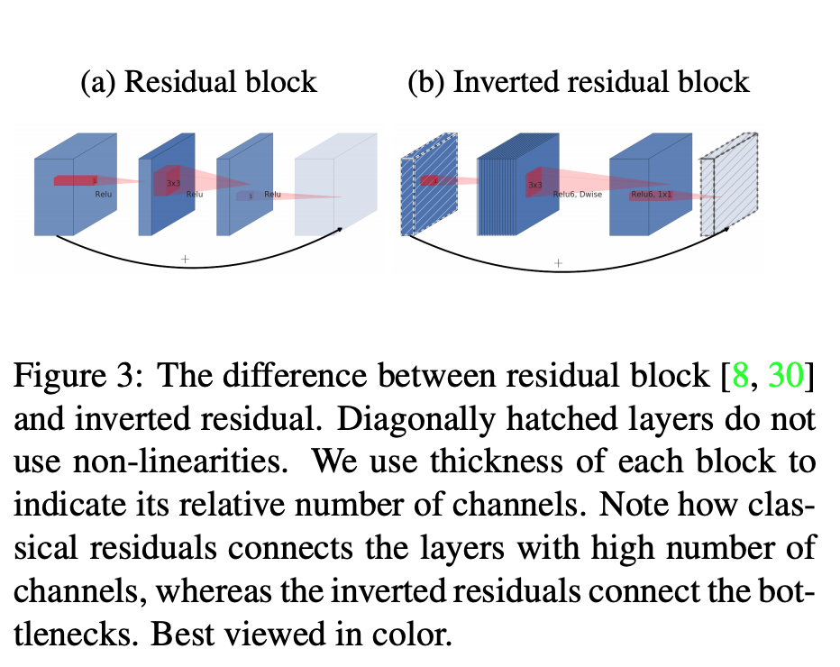
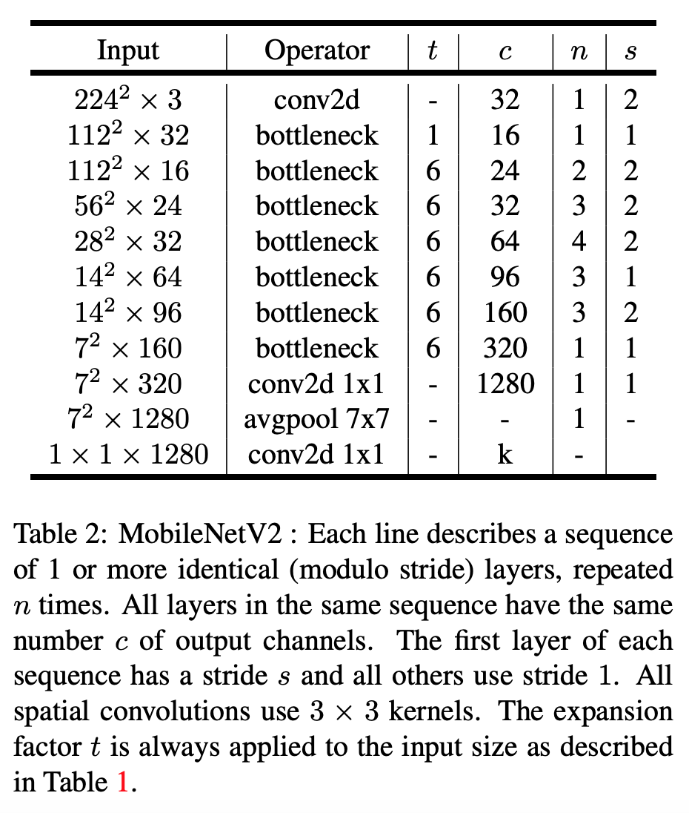
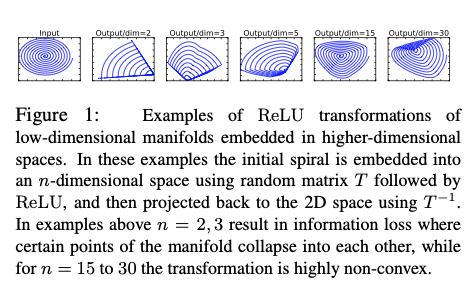
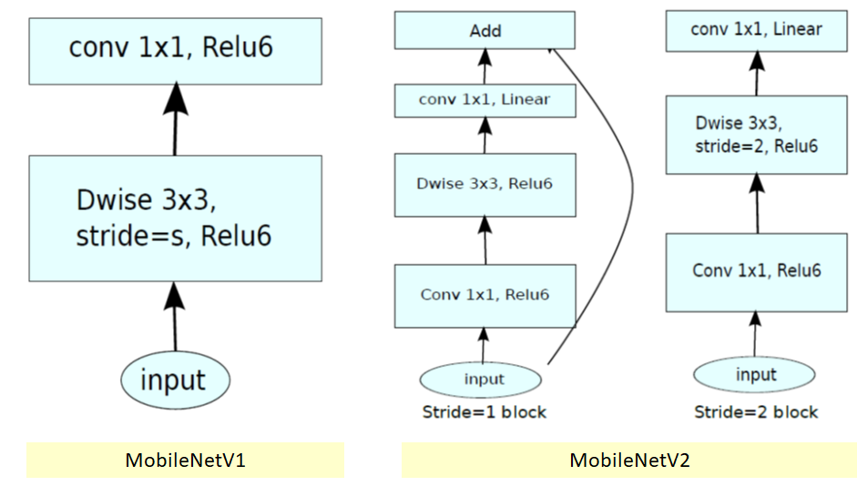

Mobilenet v1
Depthwise Separable Convolution.
Standard convolutions have the computational cost of :
where the computational cost depends multiplicatively onthe number of input channels M, the number of output channe is N, the kernel size and the feature map size .

Depthwise convolution is extremely efficient relative to standard convolution. However it only filters input channels, it does not combine them to create new features. So an additional layer that computes a linear combination ofthe output of depthwise convolution via convolutionis needed in order to generate these new features.
The combination of depthwise convolution and (pointwise) convolution is called depthwise separable con-volution.
Depthwise separable convolutions cost:
- is the spatial width and height of a square input feature map1
- is the number of input channels (input depth)
- is the spatial width and height of a square output feature map
- is the number of output channel (output depth).
Depth Multiplier: Thinner Models
For a given layer, and depth multiplier , the number of input channels becomes and the number of output channels becomes
Mobilenet v2
Inverted residuals
The bottleneck blocks appear similar to residual block where each block contains an input followed by several bottlenecks then followed by expansion. detail code here.

- Use shortcuts directly between the bottlenecks.
The ratio between the size of the input bottleneck and the inner size as the expansion ratio.
In which, when stride = 1
def bottleneck_block(x, expand=64, squeeze=16): m = Conv2D(expand, (1,1))(x) m = BatchNormalization()(m) m = Activation('relu6')(m) m = DepthwiseConv2D((3,3))(m) m = BatchNormalization()(m) m = Activation('relu6')(m) m = Conv2D(squeeze, (1,1))(m) m = BatchNormalization()(m) return Add()([m, x])when stride = 2, no shortcut

Why using expansion ratio = 6 and use relu with expanded dimension and then use shortcuts directly between the bottlenecks?
From the paper, the author summarized that:
- If the manifold of interest remains non-zero volume after ReLU transformation, it corresponds to a linear transformation.
- ReLU is capable of preserving complete information about the input manifold, but only if the input manifold lies in a low-dimensional subspace of the input space.

if we have lots of channels, and there is a a structure in the activation manifold that information might still be preserved in the other channels.
- inspired by the intuition that the bottlenecks actually contain all the necessary information, while an expansion layer acts merely as an implementation detail that accompanies a non-linear transformation of the tensor, we use shortcuts directly between the bottlenecks.
Comparison of Mobilenet v1 and Mobilenet v2
